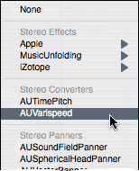

Summary: This section describes how to add and remove Audio Unit effects to an input track, bus, or output. It also describes special types of Audio Units including converter units, panners, and sidechain units such as AUMerger and AUSplitter.
Effects are Audio Units that take an audio source, perform some processing on the audio, and output the result. These effects can provide conventional effects such as delays and filters, to more unique effects such as vocoders and resonance filters. Effects are chained in a linear fashion. The output of the first effect is the input of a second effect, etc.
Effects live in the Effects section of an input track, bus, or output. To add an effect, click on the popup menu arrow of an empty effect item and choose the effect from the effect list. Effects are grouped alphabetically by manufacturer if there is more than one manufacturer (see image right).
To remove an effect, click on the popup menu arrow of the effect you wish to remove and choose None from the menu. Note, than in some cases, the configuration of the effect chain may prevent the removal of an effect in the middle of the chain. This may occur if the following effect does not support the channel configuration of the effect to be removed. If this occurs, remove all following effects before removing that audio unit.
To replace an existing effect, click on the popup menu of the effect that you wish to replace and select a new effect.
To edit the settings or presets of an effect, click the name of the effect. This will open the inspector window.
To bypass an effect, press the B button next to the effect. This is a toggle. Pressing the button a second time will re-enable the effect. You may also bypass an effect in the toolbar of the inspector window.
AU Generator tracks can have a special type of effect called a Converter Unit. You can add converter units to an AU Generator track just like you would add AU Effect to the track. Converter units are listed in a separate Converter section of the Effect popup menu.
The panner unit is a audio unit that provides support for mixing audio inputs into their respective audio output channels according to a panning algorithm. There are four panner units that are built-in to Mac OS X. These four panners are AUSurroundFieldPanner, AUSphericalHeadPanner, AUVectorPanner, and HRTFPanner.
To add a panner unit to a track, select the appropriate panner from the panner section of the Effect popup menu. This will open the custom view for the Panner Unit, or if a custom view is not available, the generic panner view.
There are two special sidechain units that provide special audio routing functionality- AUMerger and AUSplitter. You may add these units in any type of track. These sidechain units are listed in a separate Sidechain section of the Effect popup menu.
The AUMerger Audio Unit can take two input signals and merge it into a single output. The first input source is the source of the track (or the output of the effect immediately preceding the merger), while the second input is user-definable. To specify the second input, choose Edit Inputs… from the effect popup menu.
The second input may come from any channel on the audio input device and may be mono or stereo. The first input of the AUMerger is fixed and cannot be changed. For information on editing the source of an input sidechain, see Input Sidechains.
The AUSplitter Audio Unit takes a single input signal and splits it into two separate outputs. The input is the source of the track (or the output of the effect immediately preceding the splitter). The first output is the output of the audio unit and will be the input of any effect following the splitter. The second output is an output sidechain and may even be the source of a separate track. To configure the second output, choose Edit Outputs… from the effect popup menu.
For more information on configuring the second output of the AUSplitter, see Output Sidechains.